3 面部整体麻醉
全脸区域麻醉
3.1 背景知识
局部麻醉是一种使目标身体区域麻木的医疗技术，可以在不引起疼痛的情况下进行手术或诊断性干预。局部麻醉的历史始于使用可卡因作为第一种局麻药。1884年，Carl Koller展示了其在眼科手术中的应用 [1]。20世纪初见证了更安全的替代品的发展，例如普鲁卡因（Novocaine）。1943年，Nils Löfgren合成了利多卡因，其起效更快、作用时间更长于普鲁卡因。如今，利多卡因仍然是最常用的局部麻醉药之一。随后，引入了其他制剂，如布比卡因和罗哌卡因。在19世纪末至20世纪初，开发了区域神经阻滞技术，即将局麻药注射到靠近主要神经干或神经丛的部位以麻醉目标区域 [2]。
局部麻醉药可根据其化学结构分为两类：酯类和酰胺类。酯类包括普鲁卡因、氯丙卡因、丁卡因（tetracaine）、可卡因和苯佐卡因等药物。它们被假胆碱酯酶水解。酰胺类包括利多卡因、普里洛卡因、布比卡因和罗哌卡因等物质，这些物质主要在肝脏代谢。
局部麻醉药有多种剂型，每种制剂都针对特定的应用场景进行了优化。乳膏和凝胶作为非侵入性的外用制剂，可提供表面麻木感，非常适合微创美容治疗。喷雾剂具有快速应用的特点，有利于在医疗过程中麻痹咽部或口腔黏膜等浅表区域。局部麻醉药贴片是粘合型的，可提供延长的镇痛效果，适用于管理慢性病或术后疼痛。对于更深层和更精确的麻木，则采用直接注射到组织或神经附近的注射型麻醉剂，在手术、诊断程序和慢性疼痛管理中发挥着至关重要的作用。选择哪种麻醉制剂取决于操作的性质、所需的麻木深度以及个体患者的具体情况。
3.2 作用机制
局部麻醉药通过干扰神经信号传导来发挥作用。神经元通过其细胞膜上的电荷变化进行通讯，这得益于钠离子（Na⁺）的移动。这些离子通过处于静息态、激活态或失活态的钠通道移动。当神经元被刺激时，这些通道打开，允许Na⁺离子涌入细胞，导致去极化和信号传导。局部麻醉药通过靶向并阻断这些钠通道来发挥其麻木作用，尤其是在激活态或失活态。这种阻断阻止了神经元的去极化，暂停了信号的传播，从而导致受影响区域暂时丧失感觉。
3.3 给药方法
局部麻醉可根据需要和目的通过外用或注射给药。在美容医学中，常使用外用麻醉剂来麻痹皮肤，并在各种微创过程中减轻不适感。含有利多卡因的产品是最常用的外用麻醉剂，因为已知其能提供麻木效果且副作用极小。
准确的剂量和精确的局部麻醉药给药非常重要，必须由经过认证的专业人员执行。为确保安全应用，剂量通常根据患者体重计算。
对于不含肾上腺素的注射用利多卡因，最大剂量为每公斤体重 4 mg/kg。
对于体重为70 kg的患者，这相当于280 mg，可用1%利多卡因（因为1%代表10 mg/mL）制备28 mL，或用2%利多卡因（因为2%代表20 mg/mL）制备14 mL。
对于联合肾上腺素的注射用利多卡因，最大剂量为每公斤体重 7 mg/kg。
对于体重为70 kg的患者，这相当于490 mg，可用1%利多卡因 + 肾上腺素制备49 mL，或用2%利多卡因 + 肾上腺素制备24.5 mL。
对于减充血麻醉（tumescent anesthesia），例如用于抽脂手术，使用稀释的利多卡因与生理盐水、碳酸氢钠和肾上腺素混合制剂，最大剂量为每公斤体重 55 mg/kg。对于体重为70 kg的患者，这相当于3850 mg的总利多卡因量。
专业人员还应注意局部麻醉药的浓度和体积的考量。高浓度但低体积的注射需要极高的准确性以避免阻滞失败。然而，注射部位的解剖结构保持不变。相反，低浓度但高体积的制剂允许更广泛的扩散，从而
24 羟基磷灰石钙（CaHA）软组织填充剂
改善了成功应用的几率，尽管可能改变注射部位的解剖结构。
3.4 局部麻醉剂添加剂
局部麻醉剂的主要缺点包括作用时间短和剂量依赖性的副作用。因此，常将佐剂或添加剂与局部麻醉剂联用，以延长其作用时间和限制累积剂量需求（图 3.1）。此类添加剂包括：
肾上腺素：作为添加剂使用时，肾上腺素可以通过血管收缩延长局部麻醉剂的麻木效果。它还能最大限度地减少药物被吸收进入更广阔的循环系统，从而降低潜在的全身性副作用。在溶液中，肾上腺素的浓度各不相同，1:200000 含有 5 µg/mL，而 1:100000 含有 2.5 µg/mL。建议在高血压患者中使用更稀释的肾上腺素溶液。需要注意的是，虽然肾上腺素可以增强许多麻醉剂的效果，但它不能延长利多卡因（Lidocaine）的作用时间。
碳酸氢钠：将其添加到局部麻醉剂中会提高 pH 值，导致麻醉剂的非电离状态升高。这种局部麻醉剂的非电离形式更容易穿透神经膜。结果是起效更快，并减轻了注射本身相关的疼痛。通常，每 10 mL 的局部麻醉剂（如利多卡因）添加 1 mL 的 8.4% 碳酸氢钠。然而，需要注意的是，碳酸氢钠不应与局麻药联用，因为它可能导致沉淀 [3]。建议在注射前立即加入碳酸氢钠。如果局部麻醉剂长时间未使用，可能会变性，从而失去效力。
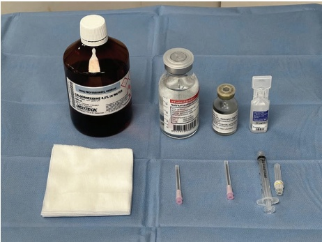
3.5 神经阻滞类型
神经阻滞涉及将局部麻醉剂置于特定神经或神经群周围，用于疼痛管理。在美容应用中，这些阻滞主要应用于面部和颈部区域 [4]。
3.5.1 三叉神经（第 V 对脑神经）分支阻滞
三叉神经是第五对脑神经，有三个主要分支：眼神经（V1）、上颌神经（V2）和下颌神经（V3）（图 3.2）。阻滞这些分支可用于疼痛管理、诊断或手术。
3.5.2 面部上、中、下阻滞
面神经阻滞靶向面神经分支，为面部的各个部位提供感觉和运动功能。主要分支包括颧颞神经、眶上神经、眶上神经、眶下神经、颊神经、下颌神经和颈神经（图 3.3）。其中一些神经可以垂直排列于内眦线（图 3.4）旁。
3.5.3 颈部区域
后颈部的神经阻滞通常靶向后颌部和前颈部的结构。浅层颈丛通过前主要分支支配前外侧颈部的皮肤。
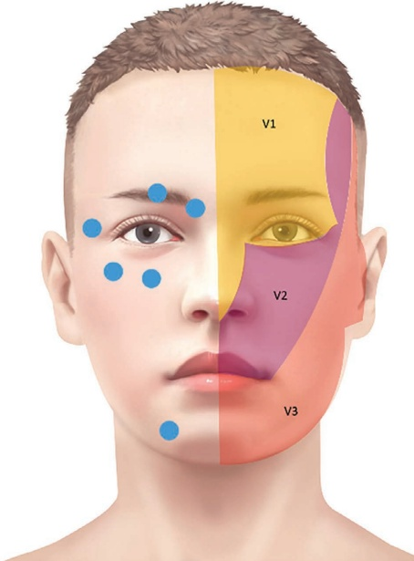
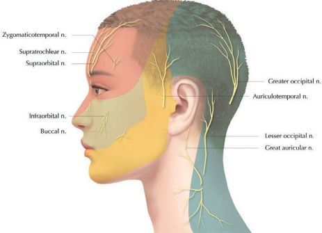
C2 至 C4 的分支。这些神经汇合于胸锁乳突肌后缘的中点，为下颌、颈部和锁骨上窝的皮肤提供感觉神经支配 [6]。
在本章中，我们将详细介绍每种神经阻滞的循序渐进操作流程，并配有图示。
3.5.3.1 眶上神经阻滞（Supratrochlear Nerve Block）
消毒。
-
在皱眉纹和眉弓下缘确定注射位置。
-
将针头轻柔推进至骨膜。
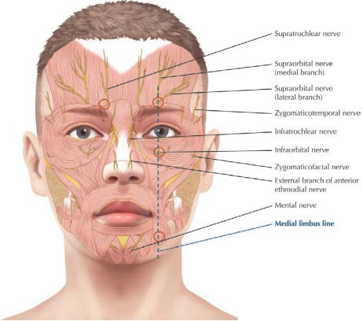
• 吸液并注射 0.2–0.5 mL。
• 可考虑注射多个较小的团注。
有关如何进行眶上神经阻滞，请参阅图 3.5；有关直观了解眶上神经的支配区域，请参阅图 3.6。
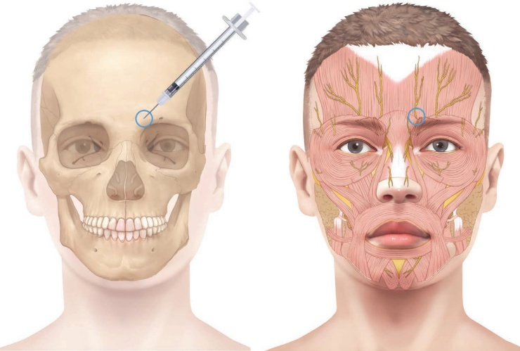
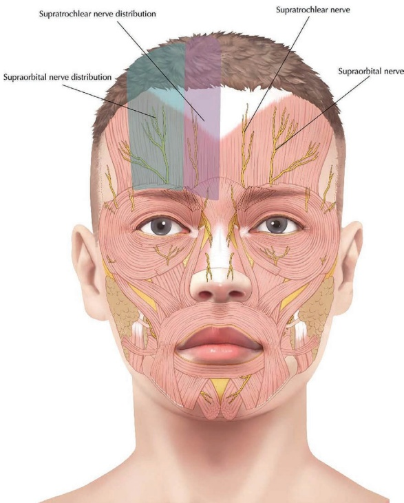
3.5.3.2 眶上神经阻滞
消毒。
通过触诊眶缘的凹陷来确定注射位置。
• 从 45° 外上方进针。
轻触骨膜。
• 吸液并注射 0.2–0.5 mL。
考虑注射多个较小的团注。
参见图 3.7，了解如何进行眶上神经阻滞；参见图 3.6 以观察眶上神经的支配区域。
3.5.3.3 颧颞神经阻滞
消毒。
通过触诊外眼环来确定注射位置。
从外眼环背侧 45° 角进针。
轻触骨膜。
• 吸液并注射 0.5–1 mL。
考虑注射多个较小的团注。
参见图 3.8，了解如何进行颧颞神经阻滞。
3.5.3.4 颧面神经阻滞
消毒。
触诊外眼环，位于眶下缘下方约 5 mm 处。
用针轻触骨膜。
• 吸液并注射 0.2–0.5 mL。
考虑注射多个较小的团注。
参见图 3.9，了解如何进行颧面神经阻滞。
3.5.3.5 眶下神经阻滞
消毒。
用第五指触诊位于中瞳孔线内侧 2–3 mm 处、且低于眶下缘约 9 mm 的凹陷。
用针轻触骨膜。
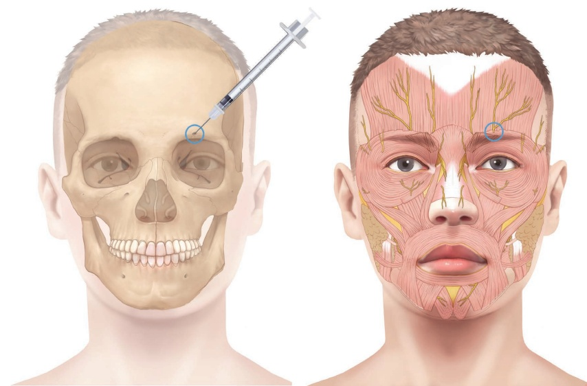
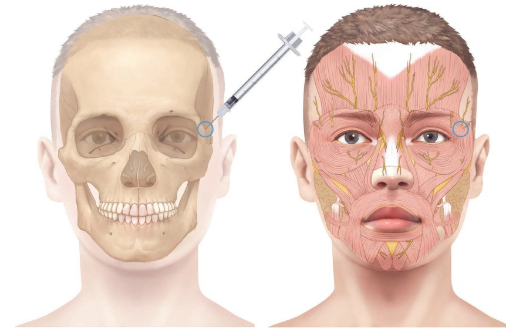
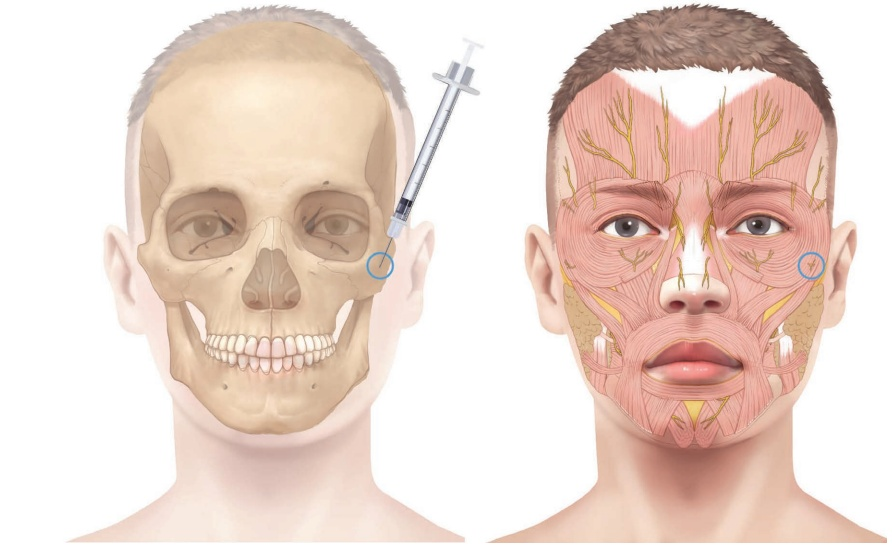
- 吸液并注射 0.2–0.5 mL。
考虑注射多个较小的团注。
参见图 3.10–3.12，了解眶下神经的近端、远端和口内阻滞， 关于如何进行近端眶下神经阻滞的操作。
注意：在鼻部下方、分骨处（columella）对唇沟进行阻滞，以麻醉内侧上唇。
本阻滞靶向眶下神经的末梢分支，这些分支可能在更近端的眶下神经阻滞中遗漏（图 3.11）。
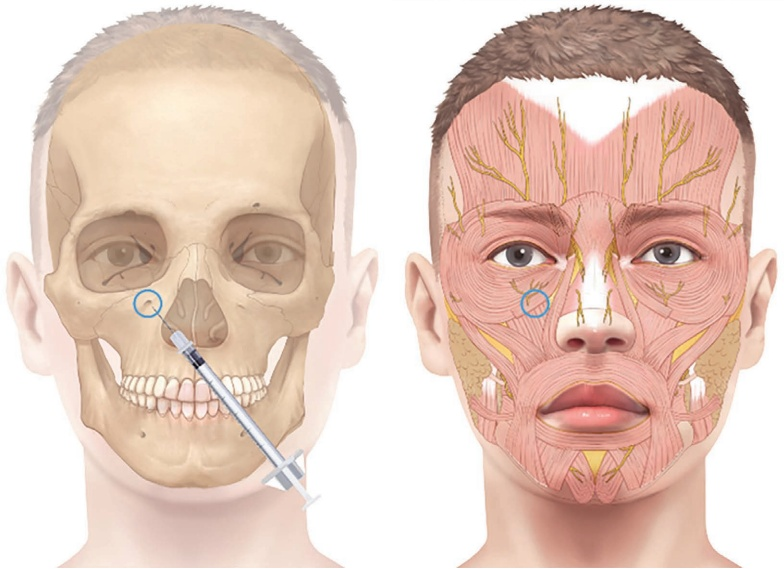
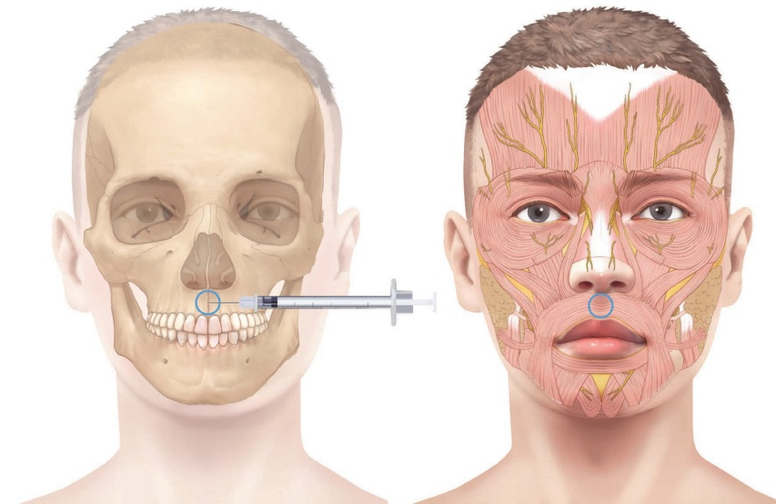
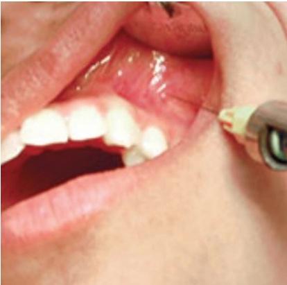
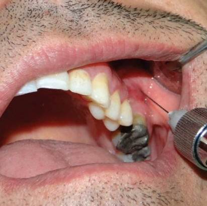
3.5.3.6 下牙槽神经阻滞
消毒。
在下颌骨中线，位于第三颗牙齿的侧方，触诊。
用针轻触骨膜。
• 吸液并注射 0.2–0.5 mL。
• 可考虑注射多个较小的团注。参见图 3.13 以了解下牙槽神经阻滞，以及图 3.14 针对同一神经但采用口腔内入路的方法。
3.5.3.7 粘膜神经阻滞
确定解剖标志：上颌和下颌的第一前磨牙和第二前磨牙。
局部外用麻醉剂（例如，将塞托卡因喷雾喷洒到这些注射部位）。 - 清洁该区域并让患者用消毒液（例如氯己定漱口水）漱口。
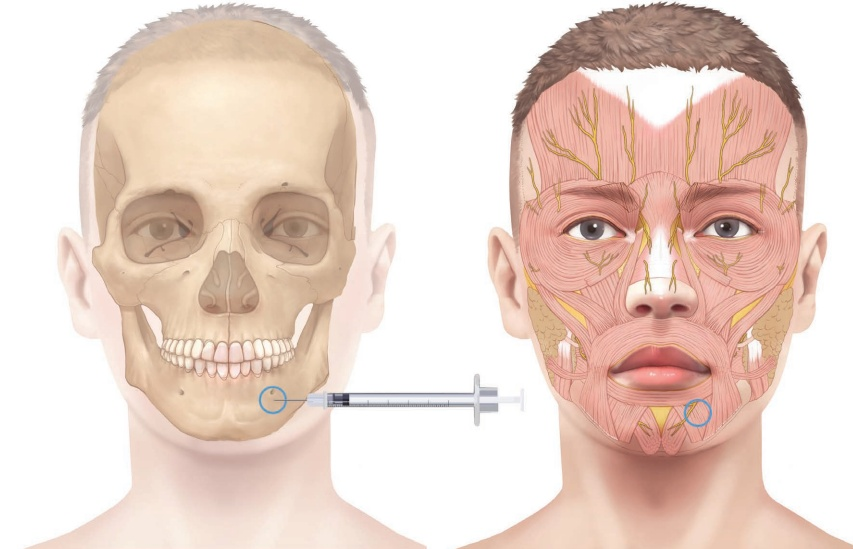
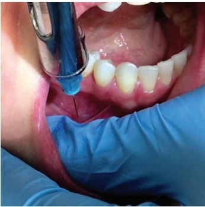
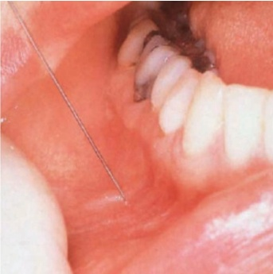
通过触诊眶下孔和颏孔来确定浅表解剖标志。在进行每一步阻滞时，用非惯用手的指尖保持定位。
通过本体感觉将针头经黏膜穿刺，向上游向颞骨上孔，向下游向颏孔，即感受位于任一孔上方并置于其下方的非惯用手手指下方来引导针尖。
• 吸液并注射 0.5–1.0 mL。
3.5.3.8 上唇块（Superior Labial Block）
上唇支是三个终末眶下神经分支中最大的，它沿颧大肌下方下降，为上唇和颊部窝的皮肤和黏膜提供支配。[7]。
- 靶向梨状孔是口腔内入路的很好的替代方案。
消毒该区域。
用针轻触鼻翼外侧的骨膜。
• 吸液并注射 0.2–0.5 mL。
3.5.3.9 下颌神经阻滞
靶向下颌神经的支，即颞下关节（TMJ）内的耳轮颞神经（AT）神经。
确定耳廓的耳垂。让患者张合口部以确定关节间隙，保持微张状态。该关节位于耳垂前方、髁突外侧极后方。颏神经支可在髁突外侧面找到。
消毒。
将针向下引入颧弓内，进入关节间隙，此时针尖略向上、略向前，使其沿着颧骨下方，沿关节突背侧向关节嵴最上斜坡滑动（如果关节间隙允许）。
- 吸液并注射 0.2–0.5 mL。该体积应足以充盈关节间隙。
耳轮颞神经（AT）可以在其整个走行过程中任何位置被阻滞；位置越近端，分布范围越广；位置越远端，则越具特异性。为了麻醉外侧太阳穴区域，可选择位于耳垂前方或上方的、紧邻浅颞动脉后方的区域。
3.5.3.10 耳轮颞神经阻滞
确定解剖标志并触诊浅颞动脉搏动。
消毒。
用针轻触骨膜。
• 吸液并注射 0.2–0.5 mL。
3.5.3.11 大枕神经和小枕神经阻滞
确定大枕嵴和小脑肌骨突。将连接这两个标志的想象线分成三等份。
在内侧三分之一处触诊大枕动脉搏动，并瞄准脉搏内侧。
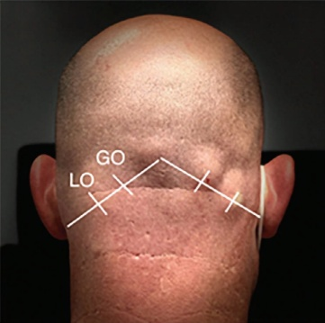
消毒该区域。
用针轻触骨膜。
• 吸液并注射 0.2–0.5 mL。
- 对于小枕神经（LO）阻滞，靶向连接大枕嵴和小脑肌骨突的线上外侧三分之一处。
参见图 3.15 以了解大枕神经（GO）和 LO 神经的标志点，并了解如何进行 GO 和 LO 神经阻滞。
3.5.3.12 浅颈丛神经阻滞
让患者坐直，确定胸锁乳突肌（SCM）的中点。
消毒该区域。
轻轻将 SCM 向外牵拉，并将针引入肌肉深层，位于矢状面内。
• 吸液并注射 0.2–0.5 mL。
3.6 不良事件
局部麻醉剂有时可能引起副作用。一些个体可能会出现耳鸣或头晕。其他人可能会报告感觉减退超出预期区域，或不自主的肌肉抽搐。口腔内金属味也可能是对麻醉剂反应的指标。在更严重的情况下，患者可能会发生癫痫发作。心血管影响
32 羟基磷灰石钙（CaHA）软组织填充剂
可能包括血压下降（低血压）和心率减慢（心动过缓）。此外，一些人可能会在接受局部麻醉后出现呼吸困难。至关重要的是，尤其是在给药后，必须监测这些副作用，以确保患者安全。
3.7 禁忌症
• 已知过敏或超敏反应史。
注射部位皮肤感染。
• 重度缺血性心脏病或心力衰竭。
外周/附件区域禁用肾上腺素。
3.8 安全注意事项
并非所有医疗机构或诊所都具备执行所有类型神经阻滞所需的必要资质、设备或专业知识。虽然大多数机构可能被授权进行更简单的操作，如扳机点注射或野外阻滞，但更高级的神经阻滞（例如臂丛神经阻滞、坐骨神经阻滞）可能需要专门的培训和设施。
- 在发生任何紧急情况时，配备齐全的急救车至关重要。
关键物品包括：
• 配备功能性输送系统的氧气
• 血氧仪
如肾上腺素等关键药物，在紧急情况下可能非常重要
用于过敏反应、心脏事件或呼吸窘迫的其他药物
大多数气道问题与颈部神经阻滞有关。例如，臂丛神经阻滞可能会意外影响迷走神经或膈神经。为避免此类风险，执行阻滞的专业人员应深入了解解剖学知识以及目标特定区域。
参考文献
[1] M. Goerig et al., “Carl Koller, cocaine, and local anesthesia: Some less known and forgotten facts,” Reg Anesth Pain Med, vol. 37, no. 3, pp. 318–324, 2012.
[2] S. Zhou et al., “Synthesis and biological activities of local anesthetics,” RSC Adv, vol. 9, no. 70, p. 41173, 2019.
[3] C. M. Brummett, B. A. Williams, “Additives to local anesthetics for peripheral nerve blockade,” Int Anesthesiol Clin, vol. 49, no. 4, pp. 104–116, 2011.
[4] A. Rękas-Dudziak et al., "The use of local anaesthetics in dermatology, aesthetic medicine and plastic surgery: Review of the literature," Adv Dermatol Allergol/Postępy Dermatologii i Alergologii, vol. 40, no. 1, p. 22, 2023.
[5] A. Hadzic, J. Vloka, Peripheral Nerve Blocks: Principles and Practice. New York: McGraw Hill, 2004.
[6] S. Waldman, Comprehensive Atlas of Ultrasound-Guided Pain Management Injection Techniques, 2nd edn. Wolters Klubers Health, 2020.
[7] W. E. Shankland, “The trigeminal nerve. Part III: The maxillary division,” Cranio, vol. 19, no. 2, pp. 78–83, 2001.